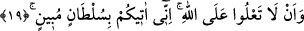
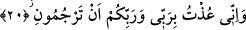

esâretten kurtarmaktı. İşte bu sebepten ötürü Âlemlerin Rabbi şöyle buyurdu; “Allah’ın
kulları bana gelin.”
Fakir (Bursevî) der ki: Buradaki teslim işi îmandan sonradır. “Ey Mûsâ Rabbine duâ
et. Eğer bizden azâbı kaldırırsan muhakkak sana inanacağız ve mutlaka İsrâil
oğullarını seninle beraber göndereceğiz dediler” (el-A‘râf, 7/134) Hz. Nûh’un (a.s.)
oğluna: “Yavrum bizimle beraber bin. Kâfirlerle beraber olma!” (Hûd, 11/42)
demesi de bu kabildendir. Yani îman et ve gemiye bin demektir. Zîrâ gemiye ancak
mü’minler binmektedirler. Binme işi îmânın sonucudur. Bazıları buradaki ibâdallah
kelimesinin mahzuf bir nidâ harfiyle mansûb olduğunu söylemişlerdir. Buna göre mânâ
ey Allah’ın kulları Allah’ın hakkı olan îman ve dâvetin kabûlünü bana edâ ve teslim
ediniz, demek olur. Yani, ey Allah’ın kulları îman ediniz ve dâveti kabûl ediniz
demektir.
“Çünkü ben sizin için” Allah’ın vahyine ve risâletine karşı mûcizelerle dâvâsında
sâdık “güvenilir bir elçiyim” Bu ifâde Allah’ın kullarının kendisine teslim edilmesi
hükmünün gerekçesidir. Burada şuna işâret edilmektedir. İsrâil oğulları Firavun’un ve
kavminin ellerinde Allah’ın emânetiydiler. Bu emânetin emin ve güvenilir elçi olan Hz.
Mûsâ’ya (a.s.) teslim edilmesi gerekiyordu. Firavun ve kavmi bu emânete ihânet ettiler.
Bunun üzerine Allah Teâlâ da onları yakalayıp cezalandırdı.
19. “Allah’a karşı ululanmayın. Ben size apaçık bir delîl getiriyorum.”
Allah’a karşı kibirlenip O’nun vahyine ve rasûlüne ihânet etmek, Allah’ın kullarını
küçümseyip onlara ihânette bulunmak sûretiyle “Allah’a karşı ululanmayın” büyüklük
taslamayın. “Ben size” Allah tarafından “apaçık bir delîl getiriyorum.”
Âyetteki âtî kelimesi ism-i fâil yahut fiil-i muzârî olabilir. Bu ifâde âyetteki nehyin
gerekçesidir. Yani size öyle açık deliller getiriyorum ki artık onları inkâra asla yol
yoktur. Bu deliller mûcizelerdir. Farsça ifâdesiyle:
Doğrusu, benim size getirdiğim açık huccetler ve âşikâr deliller iddiâ ettikleri
şeylerin doğruluğunu tam olarak ihâta edecek kadar sağlamdır. Burada edâ kelimesinin
emîn, sultân kelimesinin de el-‘alâ ile beraber gelmiş olması, meselenin hiçbir şekilde
gizli kalmayacak derecede açık olduğunu ortaya koymaktadır.
20. “Ben, beni taşla(yıp öldür)menizden, benim de Rabbim, sizin de Rabbiniz